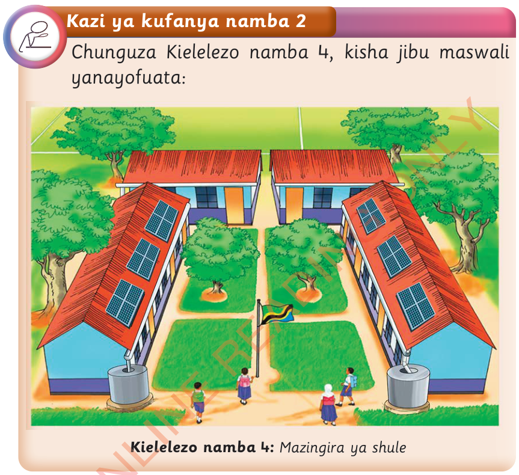

Kazi ya kufanya namba 2
Chunguza Kielelezo namba 4, kisha jibu maswali yanayofuata:
Kielelezo namba 4: Mazingira ya
shule
Maswali
1. Ni vitu gani unaviona katika Kielelezo namba 4?
2. Ni vitu gani muhimu ukiviondoa katika Kielelezo namba 4 vitaathiri mazingira ya shule? Toa sababu.